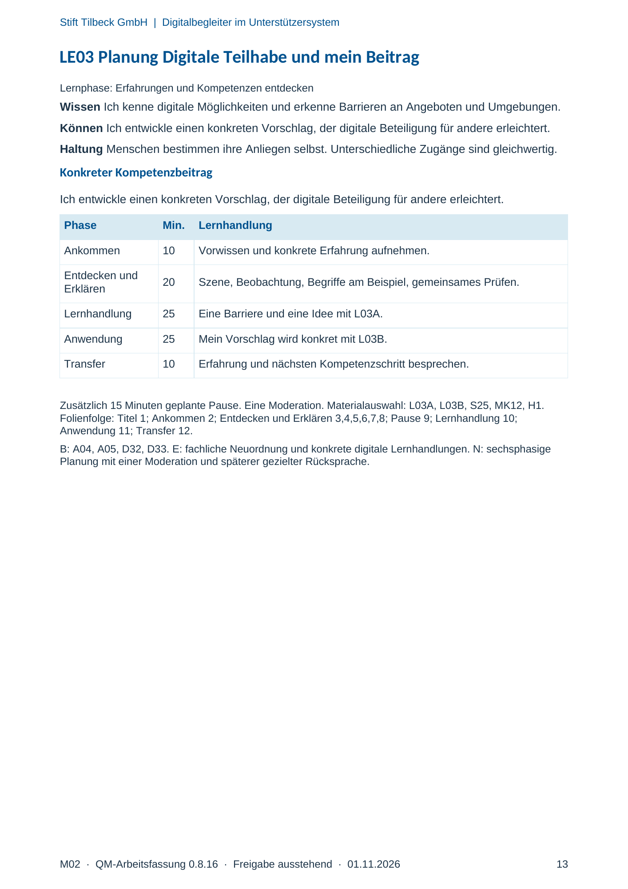
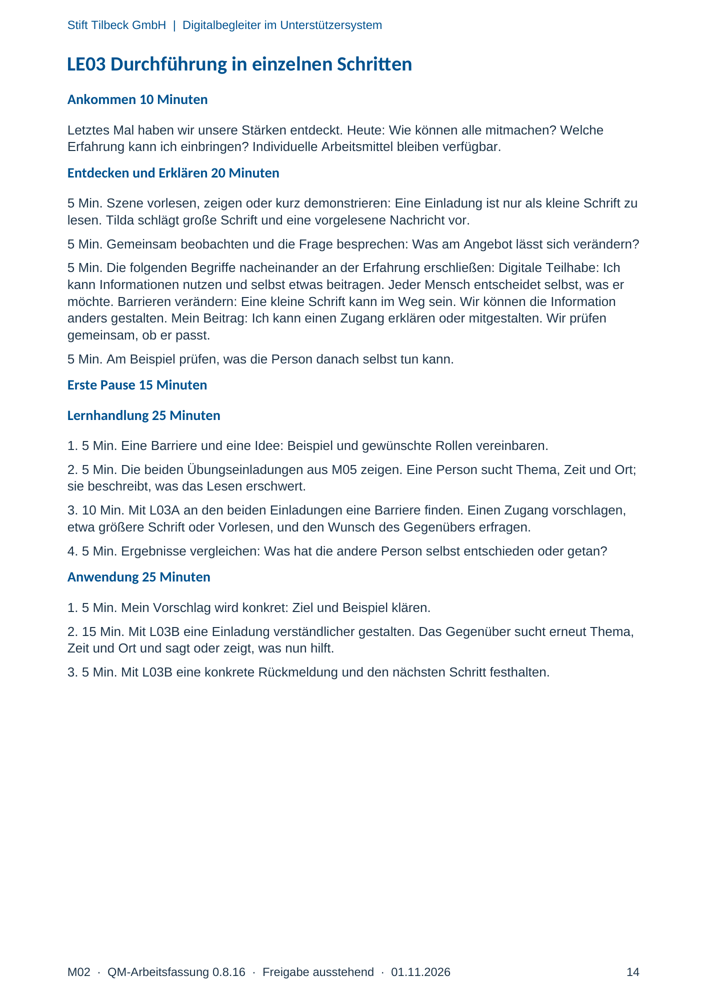
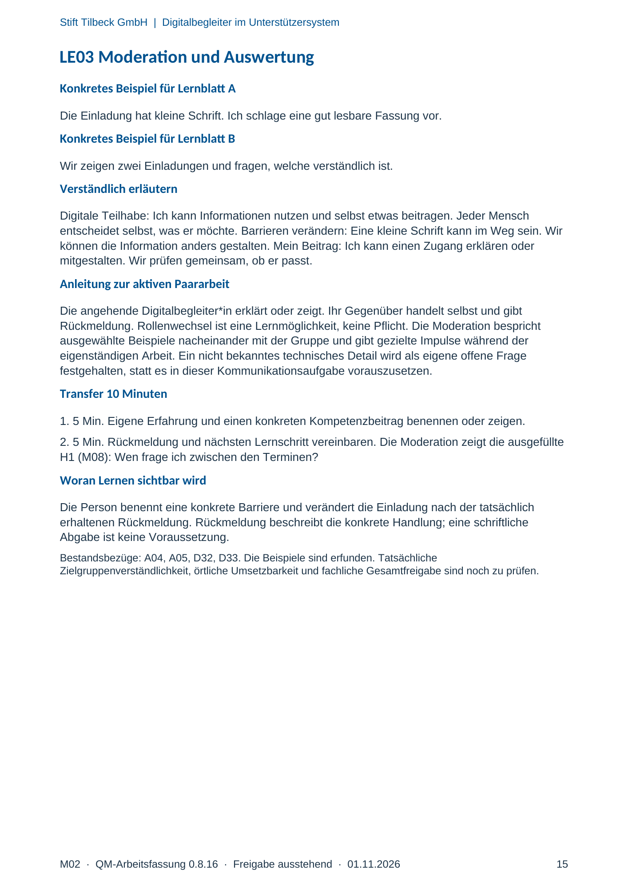

M02 · Originalseite 13, 14, 15
Handbuch und Muster
Gezielte Original-Druckauswahl.
Fragen und Ankreuzfelder werden auf dem Ausdruck bearbeitet. Die Lesefassung speichert keine Antworten.
Lesefassung · Seite 13
Stift Tilbeck GmbH | Digitalbegleiter im Unterstützersystem
LE03 Planung Digitale Teilhabe und mein Beitrag
Lernphase: Erfahrungen und Kompetenzen entdecken
Wissen Ich kenne digitale Möglichkeiten und erkenne Barrieren an Angeboten und Umgebungen.
Können Ich entwickle einen konkreten Vorschlag, der digitale Beteiligung für andere erleichtert.
Haltung Menschen bestimmen ihre Anliegen selbst. Unterschiedliche Zugänge sind gleichwertig.
Konkreter Kompetenzbeitrag
Ich entwickle einen konkreten Vorschlag, der digitale Beteiligung für andere erleichtert.
Phase Min. Lernhandlung
Ankommen 10 Vorwissen und konkrete Erfahrung aufnehmen.
Entdecken und
Erklären 20 Szene, Beobachtung, Begriffe am Beispiel, gemeinsames Prüfen.
Lernhandlung 25 Eine Barriere und eine Idee mit L03A.
Anwendung 25 Mein Vorschlag wird konkret mit L03B.
Transfer 10 Erfahrung und nächsten Kompetenzschritt besprechen.
Zusätzlich 15 Minuten geplante Pause. Eine Moderation. Materialauswahl: L03A, L03B, S25, MK12, H1.
Folienfolge: Titel 1; Ankommen 2; Entdecken und Erklären 3,4,5,6,7,8; Pause 9; Lernhandlung 10;
Anwendung 11; Transfer 12.
B: A04, A05, D32, D33. E: fachliche Neuordnung und konkrete digitale Lernhandlungen. N: sechsphasige
Planung mit einer Moderation und späterer gezielter Rücksprache.
Originalseite ansehen

Lesefassung · Seite 14
Stift Tilbeck GmbH | Digitalbegleiter im Unterstützersystem
LE03 Durchführung in einzelnen Schritten
Ankommen 10 Minuten
Letztes Mal haben wir unsere Stärken entdeckt. Heute: Wie können alle mitmachen? Welche
Erfahrung kann ich einbringen? Individuelle Arbeitsmittel bleiben verfügbar.
Entdecken und Erklären 20 Minuten
5 Min. Szene vorlesen, zeigen oder kurz demonstrieren: Eine Einladung ist nur als kleine Schrift zu
lesen. Tilda schlägt große Schrift und eine vorgelesene Nachricht vor.
5 Min. Gemeinsam beobachten und die Frage besprechen: Was am Angebot lässt sich verändern?
5 Min. Die folgenden Begriffe nacheinander an der Erfahrung erschließen: Digitale Teilhabe: Ich
kann Informationen nutzen und selbst etwas beitragen. Jeder Mensch entscheidet selbst, was er
möchte. Barrieren verändern: Eine kleine Schrift kann im Weg sein. Wir können die Information
anders gestalten. Mein Beitrag: Ich kann einen Zugang erklären oder mitgestalten. Wir prüfen
gemeinsam, ob er passt.
5 Min. Am Beispiel prüfen, was die Person danach selbst tun kann.
Erste Pause 15 Minuten
Lernhandlung 25 Minuten
1. 5 Min. Eine Barriere und eine Idee: Beispiel und gewünschte Rollen vereinbaren.
2. 5 Min. Die beiden Übungseinladungen aus M05 zeigen. Eine Person sucht Thema, Zeit und Ort;
sie beschreibt, was das Lesen erschwert.
3. 10 Min. Mit L03A an den beiden Einladungen eine Barriere finden. Einen Zugang vorschlagen,
etwa größere Schrift oder Vorlesen, und den Wunsch des Gegenübers erfragen.
4. 5 Min. Ergebnisse vergleichen: Was hat die andere Person selbst entschieden oder getan?
Anwendung 25 Minuten
1. 5 Min. Mein Vorschlag wird konkret: Ziel und Beispiel klären.
2. 15 Min. Mit L03B eine Einladung verständlicher gestalten. Das Gegenüber sucht erneut Thema,
Zeit und Ort und sagt oder zeigt, was nun hilft.
3. 5 Min. Mit L03B eine konkrete Rückmeldung und den nächsten Schritt festhalten.
Originalseite ansehen

Lesefassung · Seite 15
Stift Tilbeck GmbH | Digitalbegleiter im Unterstützersystem
LE03 Moderation und Auswertung
Konkretes Beispiel für Lernblatt A
Die Einladung hat kleine Schrift. Ich schlage eine gut lesbare Fassung vor.
Konkretes Beispiel für Lernblatt B
Wir zeigen zwei Einladungen und fragen, welche verständlich ist.
Verständlich erläutern
Digitale Teilhabe: Ich kann Informationen nutzen und selbst etwas beitragen. Jeder Mensch
entscheidet selbst, was er möchte. Barrieren verändern: Eine kleine Schrift kann im Weg sein. Wir
können die Information anders gestalten. Mein Beitrag: Ich kann einen Zugang erklären oder
mitgestalten. Wir prüfen gemeinsam, ob er passt.
Anleitung zur aktiven Paararbeit
Die angehende Digitalbegleiter*in erklärt oder zeigt. Ihr Gegenüber handelt selbst und gibt
Rückmeldung. Rollenwechsel ist eine Lernmöglichkeit, keine Pflicht. Die Moderation bespricht
ausgewählte Beispiele nacheinander mit der Gruppe und gibt gezielte Impulse während der
eigenständigen Arbeit. Ein nicht bekanntes technisches Detail wird als eigene offene Frage
festgehalten, statt es in dieser Kommunikationsaufgabe vorauszusetzen.
Transfer 10 Minuten
1. 5 Min. Eigene Erfahrung und einen konkreten Kompetenzbeitrag benennen oder zeigen.
2. 5 Min. Rückmeldung und nächsten Lernschritt vereinbaren. Die Moderation zeigt die ausgefüllte
H1 (M08): Wen frage ich zwischen den Terminen?
Woran Lernen sichtbar wird
Die Person benennt eine konkrete Barriere und verändert die Einladung nach der tatsächlich
erhaltenen Rückmeldung. Rückmeldung beschreibt die konkrete Handlung; eine schriftliche
Abgabe ist keine Voraussetzung.
Bestandsbezüge: A04, A05, D32, D33. Die Beispiele sind erfunden. Tatsächliche
Zielgruppenverständlichkeit, örtliche Umsetzbarkeit und fachliche Gesamtfreigabe sind noch zu prüfen.
Originalseite ansehen
